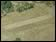

Day 4: The race in armourA cup showing the race in armour Under the hot August sun, the spectators wait to watch the last event of the Games. This is a race in armour, called the 'hoplitodromos'. Like the javelin, this reminds those watching that sporting effort is vital for war, as it ensures the soldiers are fit and strong. The athletes run two lengths of the track wearing a helmet, greaves and shield. Twenty-five identical shields are kept in the Temple of Zeus for the competitors to use, so ensuring that no one cheats with a lighter shield. As the winner crosses the finishing line, the crowds stand and cheer, knowing that it will be four years before they watch this race again. |
|
| back to day 4... | |